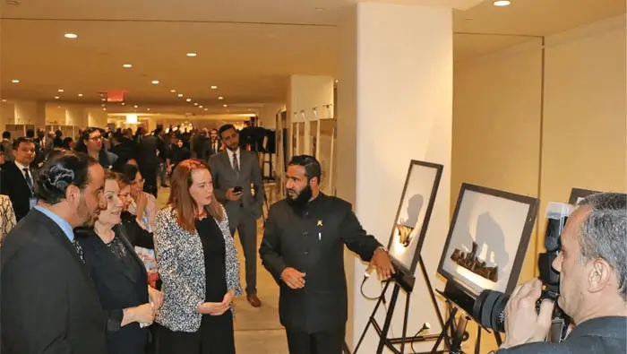

الأمم المتحدة، نيويورك، الولايات المتحدة الأمريكية 2019

15 أبريل 2019
انطلق معرض التسامح والتفاهم والتعايش: رسالة عمان للإسلام، بالمقر الرئيسي للأمم المتحدة بنيويورك في 15 أبريل 2019، تحت رعاية معالي وزير الأوقاف والشؤون الإسلامية، والسيدة ماريا فرناندا إسبينوزا غارسيس، رئيسة الجمعية العامة للأمم المتحدة، والسيدة ماريا لويزا فيوتي، رئيسة ديوان الأمين العام للأمم المتحدة السيد أنطونيو غوتيريش. وبحضور معالي الدكتور السفير خليفة بن علي الحارثي، المندوب الدائم لسلطنة عمان لدى الأمم المتحدة، والدكتور محمد سعيد المعمري، المستشار بوزارة الأوقاف والشؤون الدينية، والمشرف على المعرض.
جاء المعرض الذي أقيم في الأمم المتحدة، نتيجة تعاون مثمر بين وزارة الأوقاف والشؤون الدينية العمانية، والبعثة الدائمة لسلطنة عمان لدى الأمم المتحدة.
وأقيم حفل الافتتاح بحضور عدد من الشخصيات البارزة في الأمم المتحدة. وكان من بين الحضور عدد كبير من السفراء، ورؤساء المراكز الدينية، وأكاديميين، وأتباع طوائف دينية مختلفة من مدينة نيويورك.
تم وضع منصة ترويجية للمبادرة داخل مساحة المعرض، ويحصل الزوار فيها على خيار التصوير بلوحة الترويج لهاشتاج #من أجل التسامح .
كما تلقى الزوار قمصانًا عليها لوجو الهاشتاج #من أجل التسامح وبطاقات بريدية بها نصوص تشجع على التفاهم المتبادل والتعايش السلمي، مثل: السلامة تكمن في المسار الوسطي، تحدث بلطف مع البشرية! تمنى للآخر ما تتمناه لنفسك! أفضل الناس هم أولئك الذين يقدمون المساعدة للآخرين، وجعلناكم شعوبًا وقبائل لتعارفوا، وهل جزاء الإحسان إلا الإحسان؟ أعد الأمانة لمن ائتمنك! لا تخون حتى من خانك! تعاونوا على البر والتقوى! عامل الناس بخلق حسن!
وأعرب ضيوف المعرض عن سعادتهم وتقديرهم لما رأوه من معروضات تدعو إلى القيم الإنسانية المشتركة، وأهمية المعرض في مقر الأمم المتحدة.

“لقد حان الوقت بشكل عاجل لوصول هذا المعرض الآن إلى مقر الأمم المتحدة في نيويورك. على الرغم من أنه متجذر في التقاليد العمانية، بما في ذلك التسامح، إلا أن هذا المعرض يحمل رسالة للعالم أجمع، لأن الكراهية في تصاعد، من مذبحة الشهر الماضي في مسجد في نيوزيلندا، إلى عمليات القتل في أكتوبر الماضي في كنيس في بيتسبرغ، إلى الهجمات في الكنائس.”
“هذا المعرض هو مساهمة في تعزيز التفاهم المتبادل والتعايش السلمي. يدور هذا المعرض حول معرفة أفضل لبعضنا البعض - ورؤية إنسانيتنا المشتركة في كل واحد منا. نشكر حكومة وشعب عمان على دعمهم ومجهودهم.”
“دعونا نركز جميعًا على ما يوحدنا، ولنعمل معًا للدفاع عن المساواة والكرامة للجميع في كل مكان.” سعادة السفيرة ماريا لويزا فيوتي
مديرة ديوان الأمين العام للأمم المتحدة

“تهدف هذه المبادرة إلى تعزيز التعايش السلمي العالمي والحوار بين الأديان. أنا شخصياً سعيد بوجودنا اليوم في الأمم المتحدة، المكان الذي يجسد مساعي شعوب العالم لتحقيق التفاهم المتبادل والتعايش السلمي.”
“على مر التاريخ وخاصة في العقود القليلة الماضية، شهدنا العديد من أعمال الكراهية والإرهاب، من أحداث الحادي عشر من سبتمبر هنا في نيويورك، إلى المذبحة الأخيرة في نيوزيلندا والتي ارتكبت جميعها باسم الدين، أو لمبررات الاختلاف. تسلط هذه الأمثلة الضوء على حاجتنا جميعًا لبذل المزيد للعيش وللتعايش في وئام واحترام. هذا المعرض يدعم هذا الهدف النبيل.”
معالي الدكتور السفير خليفة بن علي الحارثي
المندوب الدائم لسلطنة عمان لدى الأمم المتحدة

“نحن في الهند ندرك جيدًا تقاليد عمان في التسامح، والتي تعد جسرًا للتفاهم بين الثقافات المختلفة. نحن في الهند نحترم تقليد الاعتدال العماني بشكل كبير.” سعادة السفير سيد أكبر الدين
الممثل الدائم للهند لدى الأمم المتحدة
“يسعدني أن أكون معكم في هذا المعرض المهم في هذا الوقت المهم. هذه الرسالة هي رسالة الإسلام إلى العالم. هذه الرسالة تعبر عن الجوهر الحقيقي للإسلام.”
“لذلك أعتقد أن هذا المعرض في هذا الوقت يتوافق أيضًا مع الشعور العام بأنه يجب علينا جميعًا الوقوف في وجه الكراهية، وفي مواجهة تشويه الأديان، وفي مواجهة الصورة الزائفة للإسلام التي لا تبرر ذلك، ولا تعكس حقيقة هذا الدين السمح.” سعادة السفير محمد إدريس
المندوب الدائم لمصر لدى الأمم المتحدة
“يسعدني أن أكون حاضرا في هذا الحفل الهام حول دور الإسلام في إيجاد حلول وسط وتحقيق السلم والأمن الدوليين، وهو أحد الأهداف الرئيسية للأمم المتحدة. تتميز سلطنة عمان بمواقفها المعتدلة والحيادية وبالتالي فهي تحظى بتقدير كبير من قبل المجموعة العربية. كما أنها مكلفة بالتوسط في الخلافات والخلافات بين الأشقاء.”
“نحن فخورون بالدور الذي يقوم به جلالة السلطان قابوس بن سعيد، والدور الذي تقوم به وزارة الخارجية والبعثة الدائمة هنا في نيويورك على حد سواء، من حيث نشر الفكر المعتدل ونبذ التطرف. ومن ناحية أخرى، في دعم الجهود الدولية لإيجاد حلول سلمية للمشاكل العالمية القائمة وخاصة المشاكل العربية التي نراها تتزايد بشكل متزايد في عالمنا العربي، وتحتاج إلى الكثير من الجهد.”
“ونتمنى لسلطنة عمان وقيادتها الرشيدة التوفيق في مبادراتها المستمرة في هذا الاتجاه.”
المراقب الدائم لجامعة الدول العربية لدى الأمم المتحدة
تفضلوا بزيارة معرض التسامح العالمي الافتراضي بلغتكم المفضلة